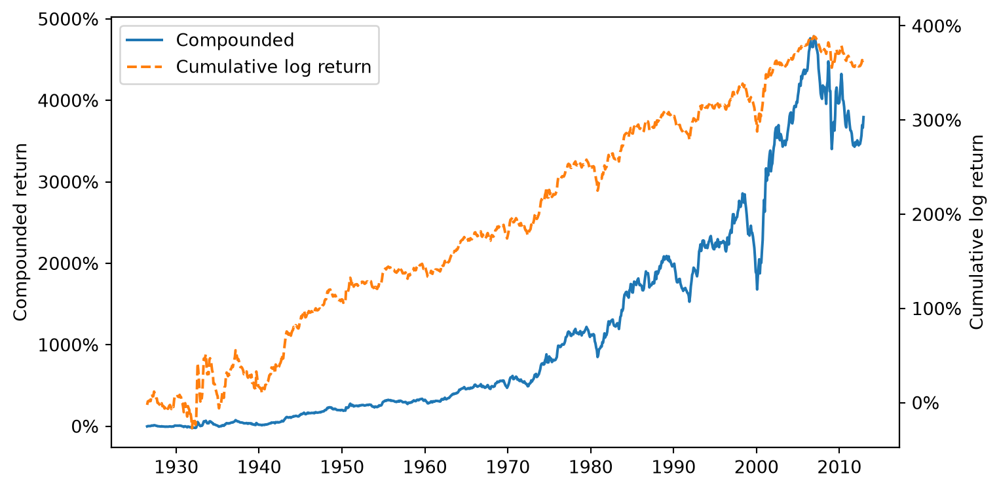

import polars as pl
from eap_pl import build_book_to_market, build_sizes
first = pl.date(1963, 6, 1)
last = pl.date(2012, 11, 1)
keys = ["permno", "month"]
all_sizes = build_sizes()
book_to_market = build_book_to_market(all_sizes)10 The Value Premium
We follow Chapter 10 of Bali et al. (2016). Book-to-market compares an accounting measure of equity with what investors pay for the shares. We ask how this ratio varies across stocks and whether it predicts the following month’s excess return.
10.1 Calculating Book-to-Market Ratio
Book equity in millions is stockholders’ equity plus deferred taxes and the investment tax credit, less preferred stock. We use preferred stock redemption value, liquidation value, or par value, in that order. BEM require stockholders’ equity and deferred taxes. They use zero for a missing tax credit or when all three preferred stock fields are missing. We take the last fiscal year-end within the calendar year.
funda = (
load_parquet("funda", "comp")
.filter(
pl.col("indfmt") == "INDL", pl.col("datafmt") == "STD",
pl.col("consol") == "C", pl.col("popsrc") == "D",
pl.col("datadate").dt.year().is_between(1962, 2011),
)
.select(
"gvkey", "datadate", year=pl.col("datadate").dt.year(),
cusip=pl.col("cusip").str.slice(0, 8),
be=pl.col("seq") + pl.col("txdb") + pl.col("itcb").fill_null(0)
- pl.coalesce("pstkrv", "pstkl", "pstk", pl.lit(0)),
)
.filter(pl.col("datadate") == pl.col("datadate").max().over("gvkey", "year"))
.unique()
.filter(pl.len().over("gvkey", "year") == 1)
)Use CRSP–Compustat links valid on the fiscal year-end. When a direct link is unavailable, try an unambiguous historical CUSIP match. We use the legacy monthly names file for this fallback.
annual_keys = ["permno", "year"]
links = (
load_parquet("ccmxpf_lnkused", "crsp")
.filter(pl.col("usedflag") == 1, pl.col("ulinktype").is_in(["LU", "LC"]), pl.col("upermno") > 0)
.select(gvkey="ugvkey", permno=pl.col("upermno").cast(pl.Int32),
start="ulinkdt", end="ulinkenddt")
)
linked_book = (
funda.join(links, on="gvkey")
.filter(pl.col("datadate") >= pl.col("start"),
(pl.col("datadate") <= pl.col("end")) | pl.col("end").is_null())
.select("gvkey", *annual_keys, "be").unique()
)
cusips = load_parquet("msenames", "crsp").select("permno", "namedt", "nameendt", cusip="ncusip")
cusip_book = (
funda.join(linked_book.select("gvkey", "year"), on=["gvkey", "year"], how="anti")
.filter(pl.col("cusip").str.len_chars() == 8)
.join(cusips, on="cusip")
.filter(pl.col("datadate").is_between("namedt", "nameendt"))
.select("gvkey", *annual_keys, "be").unique()
.filter(pl.len().over("gvkey", "year") == 1)
)
book = (
pl.concat([linked_book, cusip_book])
.filter(pl.len().over(*annual_keys) == 1, pl.col("be").is_finite())
.select(*annual_keys, "be")
)Divide book equity by the nominal December capitalization for the same calendar year, from Chapter 9. Make that ratio available at the end of the following June and carry it through the next May. This gives a December fiscal year-end at least six months before the ratio enters a portfolio sort.
december_cap = (
sizes.lazy().filter(pl.col("month").dt.month() == 12)
.select("permno", year=pl.col("month").dt.year(), me="cap")
)
book_to_market = (
book.join(december_cap, on=["permno", "year"], validate="1:1")
.with_columns(
available=pl.date(pl.col("year") + 1, 6, 1),
bm_raw=pl.col("be") / pl.col("me"),
)
.with_columns(
month=pl.date_ranges(
pl.col("available"), pl.col("available").dt.offset_by("11mo"),
interval="1mo",
),
bm=pl.when(pl.col("bm_raw") > 0).then(pl.col("bm_raw")),
)
.explode("month")
.filter(pl.col("month") <= last.dt.offset_by("1mo"))
.select(*keys, book_year="year", be="be", me="me", bm_raw="bm_raw",
bm="bm", log_bm=pl.col("bm").log())
.collect()
)For this chapter, use positive book equity so the logarithm is defined. The table also keeps the signed ratio for the annual summaries in Section 2.2.
10.2 Summary Statistics
The numerator and denominator come from the same annual vintage. For the dollar amounts in the table, express both in December 2012 dollars using the CPI for the observation month. The common deflator leaves the book-to-market ratio unchanged.
from eap_pl import mean_cross_sections, monthly_panel
panel = monthly_panel(sizes, first, last).join(book_to_market, on=keys, how="left", validate="1:1")
cpi = pl.read_csv("data/cpi-aucns.csv", try_parse_dates=True).rename(
{"observation_date": "month", "CPIAUCNS": "cpi"}
)
cpi_2012 = cpi.filter(pl.col("month") == pl.date(2012, 12, 1))["cpi"].item()
value_panel = (
panel.filter(pl.col("bm").is_not_null())
.join(cpi, on="month", validate="m:1")
.with_columns(
be_real=pl.col("be") * cpi_2012 / pl.col("cpi"),
me_real=pl.col("me") * cpi_2012 / pl.col("cpi"),
)
)| Measure | Mean | SD | Skew | Kurt. | Min | 5% | 25% | Median | 75% | 95% | Max | n |
|---|---|---|---|---|---|---|---|---|---|---|---|---|
| BM | 0.94 | 1.16 | 9.93 | 270.87 | 0.01 | 0.15 | 0.41 | 0.72 | 1.15 | 2.33 | 32.61 | 3413 |
| ln BM | -0.47 | 0.87 | -0.66 | 2.41 | -6.11 | -1.98 | -0.95 | -0.39 | 0.08 | 0.78 | 3.06 | 3413 |
| Book equity | 1044.55 | 4802.49 | 16.95 | 451.01 | 0.81 | 11.06 | 49.86 | 158.90 | 542.47 | 3949.31 | 129734.81 | 3413 |
| December market equity | 2038.89 | 9664.31 | 15.52 | 349.64 | 2.35 | 16.89 | 76.63 | 269.13 | 1019.84 | 7219.99 | 246200.55 | 3413 |
| Current market cap | 1234.14 | 6038.11 | 15.29 | 338.96 | 0.67 | 6.59 | 33.48 | 128.08 | 530.12 | 4580.32 | 159003.98 | 3401 |
Availability depends on finding both a fiscal book value and a prior December capitalization. We find an average of 3,413 stocks per month, against 3,409 in BEM. The mean and median BM round to 0.94 and 0.72 in both samples.
10.3 Correlations
The Pearson correlations use 0.5% winsorization at both ends of each pair’s monthly sample. The Spearman correlations use the original ranks. Since the logarithm preserves order for positive ratios, BM and ln BM have a Spearman correlation of one and the same rank correlation with each other variable.
from eap_pl import correlation_matrix, period_correlations, persistence
measures = {"bm": "BM", "log_bm": "ln BM", "beta": "Beta", "log_cap": "Size"}
corr = period_correlations(value_panel, measures, "month").select(pl.exclude("month").mean())| Measure | BM | ln BM | Beta | Size |
|---|---|---|---|---|
| BM | 1.00 | -0.23 | -0.26 | |
| ln BM | 0.84 | -0.23 | -0.26 | |
| Beta | -0.19 | -0.22 | 0.32 | |
| Size | -0.27 | -0.24 | 0.30 |
10.4 Persistence
Book-to-market updates once a year, so we start the persistence analysis at a lag of twelve months. Shorter lags would often compare the same book-to-market observation with itself. As in the annual persistence analysis, winsorize each side after matching the sample by date and stock.
| Lag (months) | BM | ln BM |
|---|---|---|
| 12 | 0.801 | 0.820 |
| 24 | 0.670 | 0.697 |
| 36 | 0.583 | 0.612 |
| 48 | 0.522 | 0.553 |
| 60 | 0.475 | 0.504 |
| 120 | 0.366 | 0.393 |
10.5 Book-to-Market Ratio and Stock Returns
10.5.1 Univariate Portfolio Analysis
Form ten portfolios at the end of each month using the book-to-market ratio. Compare breakpoints from all eligible stocks with breakpoints from NYSE stocks. Holding returns use the next month’s CRSP returns and the delisting adjustment in Section 7.2. Value weights use current market capitalization at formation. Returns and CAPM alphas are percentages per month, and \(t\)-statistics use six Newey–West lags.
from eap_pl import bivariate_months, bivariate_panel, fama_macbeth_table, univariate_panel
characteristics = [
pl.col("bm").mean().alias("BM"), pl.col("log_bm").mean().alias("ln BM"),
pl.col("cap").mean().alias("Market cap"), pl.col("beta").mean().alias("Beta"),
(100 * (pl.col("exchcd") == 1).fill_null(False).mean()).alias("% NYSE"),
pl.len().alias("Stocks"),
]| Breakpoints | Statistic | 1 | 2 | 3 | 4 | 5 | 6 | 7 | 8 | 9 | 10 | 10–1 |
|---|---|---|---|---|---|---|---|---|---|---|---|---|
| All stocks | BM | 0.14 | 0.29 | 0.41 | 0.53 | 0.66 | 0.79 | 0.95 | 1.16 | 1.49 | 2.97 | |
| All stocks | ln BM | -2.18 | -1.32 | -0.96 | -0.70 | -0.49 | -0.30 | -0.11 | 0.09 | 0.34 | 0.89 | |
| All stocks | Market cap | 2191.65 | 2170.04 | 1686.67 | 1423.99 | 1231.51 | 1041.03 | 897.46 | 761.07 | 599.52 | 333.00 | |
| All stocks | Beta | 1.05 | 0.98 | 0.90 | 0.85 | 0.81 | 0.77 | 0.74 | 0.70 | 0.66 | 0.60 | |
| All stocks | % NYSE | 28.53 | 35.50 | 40.44 | 43.22 | 45.72 | 47.18 | 45.54 | 43.93 | 40.06 | 32.20 | |
| All stocks | Stocks | 341.79 | 341.26 | 341.13 | 341.30 | 341.39 | 341.03 | 341.21 | 341.23 | 341.17 | 341.68 | |
| All stocks | EW Excess return | 0.08 (0.22) |
0.37 (1.17) |
0.50 (1.77) |
0.69 (2.51) |
0.75 (2.77) |
0.86 (3.30) |
0.94 (3.65) |
1.02 (3.83) |
1.19 (4.38) |
1.41 (4.25) |
1.33 (6.13) |
| All stocks | EW CAPM alpha | -0.57 (-2.91) |
-0.24 (-1.52) |
-0.06 (-0.45) |
0.14 (1.10) |
0.23 (1.68) |
0.36 (2.73) |
0.47 (3.39) |
0.56 (3.75) |
0.73 (4.59) |
0.93 (4.39) |
1.50 (6.74) |
| All stocks | VW Excess return | 0.31 (1.18) |
0.33 (1.57) |
0.46 (2.32) |
0.44 (2.13) |
0.46 (2.27) |
0.52 (2.77) |
0.59 (2.95) |
0.67 (3.18) |
0.68 (3.43) |
0.88 (3.66) |
0.57 (2.47) |
| All stocks | VW CAPM alpha | -0.20 (-1.63) |
-0.15 (-1.98) |
0.00 (0.02) |
-0.02 (-0.32) |
0.02 (0.28) |
0.11 (1.39) |
0.18 (1.86) |
0.25 (2.11) |
0.26 (2.14) |
0.42 (2.95) |
0.63 (2.63) |
| NYSE | BM | 0.18 | 0.35 | 0.47 | 0.58 | 0.69 | 0.81 | 0.94 | 1.10 | 1.37 | 2.68 | |
| NYSE | ln BM | -1.93 | -1.11 | -0.81 | -0.60 | -0.42 | -0.27 | -0.11 | 0.05 | 0.26 | 0.80 | |
| NYSE | Market cap | 2342.84 | 1897.66 | 1595.42 | 1272.95 | 1182.85 | 1090.00 | 907.71 | 806.53 | 632.32 | 359.16 | |
| NYSE | Beta | 1.05 | 0.94 | 0.87 | 0.83 | 0.79 | 0.76 | 0.72 | 0.70 | 0.67 | 0.61 | |
| NYSE | % NYSE | 31.29 | 38.98 | 43.12 | 44.59 | 46.92 | 47.73 | 47.53 | 45.38 | 41.67 | 33.65 | |
| NYSE | Stocks | 543.59 | 359.95 | 318.73 | 298.30 | 284.22 | 276.82 | 279.24 | 289.48 | 324.36 | 438.50 | |
| NYSE | EW Excess return | 0.22 (0.65) |
0.53 (1.82) |
0.64 (2.34) |
0.69 (2.52) |
0.81 (3.07) |
0.87 (3.37) |
0.88 (3.52) |
0.98 (3.77) |
1.15 (4.27) |
1.35 (4.18) |
1.13 (5.84) |
| NYSE | EW CAPM alpha | -0.42 (-2.35) |
-0.05 (-0.34) |
0.09 (0.69) |
0.16 (1.20) |
0.30 (2.28) |
0.39 (2.89) |
0.41 (3.21) |
0.52 (3.66) |
0.68 (4.43) |
0.87 (4.34) |
1.29 (6.47) |
| NYSE | VW Excess return | 0.35 (1.50) |
0.49 (2.46) |
0.46 (2.26) |
0.46 (2.15) |
0.44 (2.26) |
0.52 (2.77) |
0.61 (3.01) |
0.63 (3.13) |
0.69 (3.49) |
0.77 (3.36) |
0.42 (2.17) |
| NYSE | VW CAPM alpha | -0.14 (-1.48) |
0.03 (0.41) |
-0.00 (-0.07) |
-0.00 (-0.03) |
0.01 (0.11) |
0.12 (1.43) |
0.21 (1.86) |
0.22 (1.93) |
0.27 (2.37) |
0.32 (2.49) |
0.46 (2.30) |
The equal-weighted high-minus-low spread with all-stock breakpoints is 1.33% per month, compared with 1.34% in BEM. With value weighting, the spread is 0.57% per month in this build.
10.5.2 Bivariate Portfolio Analysis
Sort first on a control variable, then on book-to-market within each control quintile. This asks whether the return difference between high and low book-to-market stocks persists among stocks of similar beta or size.
| Panel | Sort | Weights | Portfolio | Excess return | CAPM alpha |
|---|---|---|---|---|---|
| BM 5–1 within control quintile | Beta | EW | 1 | 0.94 (5.32) |
1.00 (5.71) |
| BM 5–1 within control quintile | Beta | EW | 2 | 0.82 (5.11) |
0.85 (5.26) |
| BM 5–1 within control quintile | Beta | EW | 3 | 0.70 (4.81) |
0.75 (5.13) |
| BM 5–1 within control quintile | Beta | EW | 4 | 0.99 (6.04) |
1.02 (6.20) |
| BM 5–1 within control quintile | Beta | EW | 5 | 1.18 (6.41) |
1.24 (6.70) |
| BM 5–1 within control quintile | Beta | EW | Average | 0.93 (6.69) |
0.97 (6.97) |
| BM 5–1 within control quintile | Beta | VW | 1 | 0.58 (3.02) |
0.58 (3.06) |
| BM 5–1 within control quintile | Beta | VW | 2 | 0.40 (2.32) |
0.43 (2.52) |
| BM 5–1 within control quintile | Beta | VW | 3 | 0.30 (1.87) |
0.30 (1.88) |
| BM 5–1 within control quintile | Beta | VW | 4 | 0.57 (3.03) |
0.57 (2.97) |
| BM 5–1 within control quintile | Beta | VW | 5 | 0.44 (1.81) |
0.47 (1.90) |
| BM 5–1 within control quintile | Beta | VW | Average | 0.46 (3.40) |
0.47 (3.45) |
| BM 5–1 within control quintile | Market cap | EW | 1 | 0.58 (2.27) |
0.72 (2.90) |
| BM 5–1 within control quintile | Market cap | EW | 2 | 1.15 (4.92) |
1.30 (5.65) |
| BM 5–1 within control quintile | Market cap | EW | 3 | 1.07 (4.56) |
1.23 (5.32) |
| BM 5–1 within control quintile | Market cap | EW | 4 | 0.73 (3.22) |
0.92 (4.13) |
| BM 5–1 within control quintile | Market cap | EW | 5 | 0.36 (1.85) |
0.52 (2.65) |
| BM 5–1 within control quintile | Market cap | EW | Average | 0.78 (4.01) |
0.94 (4.92) |
| BM 5–1 within control quintile | Market cap | VW | 1 | 0.69 (2.62) |
0.82 (3.17) |
| BM 5–1 within control quintile | Market cap | VW | 2 | 1.16 (4.94) |
1.31 (5.68) |
| BM 5–1 within control quintile | Market cap | VW | 3 | 1.07 (4.52) |
1.24 (5.31) |
| BM 5–1 within control quintile | Market cap | VW | 4 | 0.74 (3.32) |
0.92 (4.19) |
| BM 5–1 within control quintile | Market cap | VW | 5 | 0.19 (1.09) |
0.27 (1.50) |
| BM 5–1 within control quintile | Market cap | VW | Average | 0.77 (4.05) |
0.91 (4.84) |
| Across control quintiles | Beta | EW | 1 | 0.34 (1.11) |
-0.22 (-1.31) |
| Across control quintiles | Beta | EW | 2 | 0.66 (2.43) |
0.14 (1.03) |
| Across control quintiles | Beta | EW | 3 | 0.77 (2.98) |
0.27 (2.17) |
| Across control quintiles | Beta | EW | 4 | 0.95 (3.59) |
0.45 (3.39) |
| Across control quintiles | Beta | EW | 5 | 1.27 (4.09) |
0.75 (4.22) |
| Across control quintiles | Beta | EW | 5–1 | 0.93 (6.69) |
0.97 (6.97) |
| Across control quintiles | Beta | VW | 1 | 0.37 (1.76) |
-0.08 (-1.09) |
| Across control quintiles | Beta | VW | 2 | 0.44 (2.29) |
0.01 (0.19) |
| Across control quintiles | Beta | VW | 3 | 0.48 (2.56) |
0.08 (1.15) |
| Across control quintiles | Beta | VW | 4 | 0.59 (3.06) |
0.18 (2.28) |
| Across control quintiles | Beta | VW | 5 | 0.82 (3.87) |
0.39 (3.63) |
| Across control quintiles | Beta | VW | 5–1 | 0.46 (3.40) |
0.47 (3.45) |
| Across control quintiles | Market cap | EW | 1 | 0.38 (1.06) |
-0.26 (-1.30) |
| Across control quintiles | Market cap | EW | 2 | 0.72 (2.44) |
0.17 (1.09) |
| Across control quintiles | Market cap | EW | 3 | 0.90 (3.30) |
0.39 (2.76) |
| Across control quintiles | Market cap | EW | 4 | 0.99 (3.77) |
0.52 (3.65) |
| Across control quintiles | Market cap | EW | 5 | 1.15 (4.13) |
0.68 (4.24) |
| Across control quintiles | Market cap | EW | 5–1 | 0.78 (4.01) |
0.94 (4.92) |
| Across control quintiles | Market cap | VW | 1 | 0.27 (0.79) |
-0.35 (-1.86) |
| Across control quintiles | Market cap | VW | 2 | 0.62 (2.17) |
0.07 (0.52) |
| Across control quintiles | Market cap | VW | 3 | 0.79 (2.98) |
0.29 (2.17) |
| Across control quintiles | Market cap | VW | 4 | 0.88 (3.50) |
0.42 (3.19) |
| Across control quintiles | Market cap | VW | 5 | 1.04 (3.83) |
0.57 (3.70) |
| Across control quintiles | Market cap | VW | 5–1 | 0.77 (4.05) |
0.91 (4.84) |
With independent sorts, the book-to-market cutoffs are the same in each control quintile. Each portfolio is the intersection of the two quintile assignments. An average portfolio equally weights the five constituent portfolio returns each month.
def value_quintiles(control):
portfolios = bivariate_months(panel, control, "bm", nyse=False, dependent=False)
return pl.concat([
bivariate_panel(portfolios, weight, independent=True)
.with_columns(pl.lit(weight).alias("Weights"))
for weight in ("EW", "VW")
]).select("Weights", pl.exclude("Weights")).rename({"Target": "BM"})| Weights | BM | 1 | 2 | 3 | 4 | 5 | Control avg. | Control 5–1 | Control 5–1 CAPM alpha |
|---|---|---|---|---|---|---|---|---|---|
| EW | 1 | 0.46 | 0.45 | 0.47 | 0.24 | 0.06 | 0.34 | -0.41 (-1.79) |
-0.75 (-3.27) |
| EW | 2 | 0.63 | 0.66 | 0.66 | 0.66 | 0.57 | 0.64 | -0.05 (-0.24) |
-0.44 (-2.18) |
| EW | 3 | 0.90 | 0.78 | 0.82 | 0.83 | 0.78 | 0.82 | -0.13 (-0.63) |
-0.55 (-2.62) |
| EW | 4 | 0.97 | 0.94 | 0.97 | 0.92 | 1.00 | 0.96 | 0.02 (0.10) |
-0.41 (-2.11) |
| EW | 5 | 1.35 | 1.31 | 1.27 | 1.26 | 1.14 | 1.27 | -0.21 (-0.88) |
-0.59 (-2.86) |
| EW | Average | 0.86 | 0.83 | 0.84 | 0.78 | 0.71 | -0.16 (-0.82) |
-0.55 (-3.14) |
|
| EW | 5–1 | 0.88 (4.06) |
0.86 (4.86) |
0.80 (4.84) |
1.02 (5.95) |
1.08 (5.60) |
0.93 (6.20) |
||
| EW | 5–1 CAPM alpha | 0.99 (4.76) |
0.90 (5.06) |
0.85 (5.18) |
1.05 (6.09) |
1.15 (5.90) |
0.99 (6.59) |
||
| VW | 1 | 0.42 | 0.33 | 0.44 | 0.26 | 0.26 | 0.34 | -0.17 (-0.53) |
-0.53 (-1.86) |
| VW | 2 | 0.38 | 0.43 | 0.38 | 0.63 | 0.30 | 0.43 | -0.06 (-0.27) |
-0.40 (-1.74) |
| VW | 3 | 0.54 | 0.45 | 0.54 | 0.43 | 0.66 | 0.53 | 0.11 (0.45) |
-0.26 (-1.15) |
| VW | 4 | 0.63 | 0.54 | 0.68 | 0.53 | 0.70 | 0.62 | 0.07 (0.29) |
-0.33 (-1.52) |
| VW | 5 | 0.92 | 0.76 | 0.80 | 0.83 | 0.63 | 0.79 | -0.29 (-1.17) |
-0.69 (-2.93) |
| VW | Average | 0.58 | 0.50 | 0.57 | 0.54 | 0.51 | -0.07 (-0.32) |
-0.44 (-2.34) |
|
| VW | 5–1 | 0.50 (2.16) |
0.43 (2.36) |
0.36 (2.21) |
0.57 (2.94) |
0.38 (1.67) |
0.45 (3.22) |
||
| VW | 5–1 CAPM alpha | 0.53 (2.35) |
0.47 (2.58) |
0.36 (2.24) |
0.57 (2.88) |
0.37 (1.59) |
0.46 (3.30) |
| Weights | BM | 1 | 2 | 3 | 4 | 5 | Control avg. | Control 5–1 | Control 5–1 CAPM alpha |
|---|---|---|---|---|---|---|---|---|---|
| EW | 1 | 1.33 | -0.09 | -0.02 | 0.30 | 0.37 | 0.37 | -0.97 (-2.41) |
-0.92 (-2.36) |
| EW | 2 | 1.29 | 0.54 | 0.63 | 0.66 | 0.50 | 0.72 | -0.79 (-2.54) |
-0.76 (-2.49) |
| EW | 3 | 1.53 | 0.72 | 0.82 | 0.76 | 0.61 | 0.88 | -0.92 (-3.33) |
-0.87 (-3.29) |
| EW | 4 | 1.65 | 0.87 | 0.89 | 0.87 | 0.69 | 0.99 | -0.96 (-3.67) |
-0.91 (-3.57) |
| EW | 5 | 1.83 | 1.05 | 1.05 | 0.96 | 0.79 | 1.14 | -1.04 (-4.05) |
-1.04 (-4.03) |
| EW | Average | 1.56 | 0.62 | 0.67 | 0.71 | 0.59 | -0.97 (-3.54) |
-0.93 (-3.51) |
|
| EW | 5–1 | 0.46 (1.61) |
1.14 (4.78) |
1.07 (4.36) |
0.66 (2.84) |
0.42 (2.23) |
0.76 (3.84) |
||
| EW | 5–1 CAPM alpha | 0.63 (2.31) |
1.32 (5.66) |
1.23 (5.03) |
0.83 (3.52) |
0.55 (2.86) |
0.92 (4.74) |
||
| VW | 1 | 0.70 | -0.08 | -0.02 | 0.32 | 0.34 | 0.25 | -0.39 (-0.92) |
-0.26 (-0.66) |
| VW | 2 | 0.77 | 0.51 | 0.61 | 0.65 | 0.43 | 0.60 | -0.34 (-1.06) |
-0.25 (-0.82) |
| VW | 3 | 1.04 | 0.70 | 0.84 | 0.72 | 0.45 | 0.75 | -0.59 (-2.00) |
-0.49 (-1.77) |
| VW | 4 | 1.25 | 0.88 | 0.90 | 0.88 | 0.55 | 0.89 | -0.70 (-2.53) |
-0.63 (-2.36) |
| VW | 5 | 1.39 | 1.06 | 1.07 | 0.99 | 0.60 | 1.02 | -0.80 (-3.09) |
-0.76 (-3.02) |
| VW | Average | 1.08 | 0.62 | 0.68 | 0.71 | 0.47 | -0.60 (-2.10) |
-0.52 (-1.90) |
|
| VW | 5–1 | 0.65 (2.30) |
1.14 (4.76) |
1.09 (4.41) |
0.68 (2.89) |
0.25 (1.36) |
0.77 (3.95) |
||
| VW | 5–1 CAPM alpha | 0.81 (2.95) |
1.31 (5.64) |
1.26 (5.10) |
0.84 (3.53) |
0.32 (1.69) |
0.91 (4.77) |
10.5.3 Fama–MacBeth Regression Analysis
Compare the slopes on raw and logged book-to-market with and without beta and log size. The explanatory variables are winsorized within month at the 0.5th and 99.5th percentiles.
| Term | (1) | (2) | (3) | (4) | (5) | (6) | (7) | (8) |
|---|---|---|---|---|---|---|---|---|
| BM | 0.42 (5.46) |
0.34 (5.28) |
0.28 (3.46) |
0.21 (3.37) |
||||
| ln BM | 0.44 (6.29) |
0.39 (6.46) |
0.31 (3.84) |
0.27 (4.24) |
||||
| Beta | -0.17 (-1.28) |
0.01 (0.04) |
-0.12 (-0.95) |
0.06 (0.36) |
||||
| Size | -0.14 (-2.92) |
-0.15 (-2.58) |
-0.14 (-2.75) |
-0.15 (-2.57) |
||||
| Intercept | 0.42 (1.45) |
0.61 (2.64) |
1.17 (2.38) |
1.25 (2.90) |
0.97 (3.59) |
1.04 (4.40) |
1.54 (3.41) |
1.53 (3.74) |
| Adjusted R² | 0.01 | 0.02 | 0.02 | 0.04 | 0.01 | 0.02 | 0.02 | 0.04 |
| n | 3395 | 3376 | 3394 | 3376 | 3395 | 3376 | 3394 | 3376 |
10.6 The Value Factor
HML averages the high-book-to-market portfolios across the two size groups and subtracts the average of their low-book-to-market counterparts. Using small and big stocks on both sides reduces the weight of the size effect in the comparison. We use the published monthly Fama–French HML series from July 1926 through December 2012.

In the Fama–French three-factor model, the intercept measures the portfolio’s return after accounting for exposures to market, size, and value factors. For excess portfolio return \(r_{p,t}\), the regression is
\[ r_{p,t}=\alpha_p+\beta_{p,M}MKT_t+\beta_{p,S}SMB_t+\beta_{p,H}HML_t+\varepsilon_{p,t}. \]